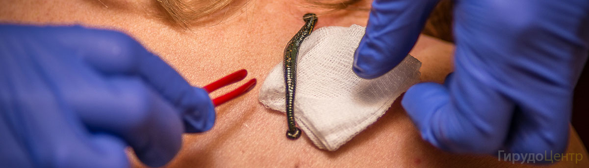
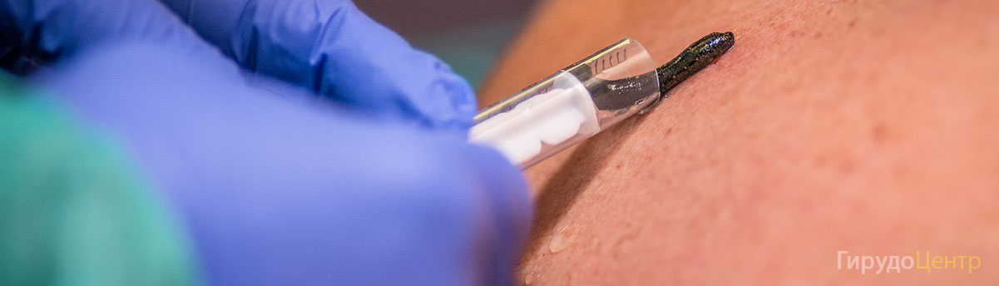

Гирудотерапия в гинекологии или лечение пиявками — метод, который еще относительно недавно считался устаревшим. Но исследования, направленные на изучение этих животных, дали неожиданные результаты: в секрете (слюне) пиявок обнаружились вещества, которые для иммунной, кроветворной и других систем организма считаются незаменимыми.
Варикозное расширение вен можно с полным правом назвать «визитной карточкой» нашего времени. Недостаток физической активности, сидячий образ жизни, питание рафинированными продуктами и другие факторы приводят к тому, что расширение и воспаление вен нижних конечностей существенно «помолодело».
Геморрой относится к заболеваниям, которые достаточно сложно подаются лечению консервативными методами. Тем более, что расширение геморроидальных вен многие считают неким «постыдным» состоянием, и наслышаны о необходимости «обязательного» хирургического лечения, что часто приводит к задержке с обращением к врачу и отсрочке с лечением.
Простатит — воспаление предстательной железы — практически неизменный спутник мужчин, начиная с 40-45-летнего возраста, особенно у тех, кто ведет малоподвижный образ жизни, имеет вредные привычки или перенес инфекционные заболевания мочеполовой системы.
Грыжа межпозвонковых дисков — достаточно распространенное заболевание позвоночника. Оно существенно снижает качество жизни человека, требует длительного, а иногда — пожизненного лечения, и в некоторых ситуациях хирургического вмешательства.
Лечение артроза пиявками — один из методов комплексной терапии, который позволяет быстро облегчить симптомы заболевания и стимулировать восстановительные процессы в пораженных суставах.
В гинекологии гирудотерапия широко распространена в качестве одного из вспомогательных методов лечения, которые назначаются одновременно с медикаментозным, физиотерапевтическим и пр.
Заболевания щитовидной железы достаточно сложны в лечении, так как требуют длительной, а иногда — пожизненной заместительной гормональной терапии (ЗГТ), тщательно подобранной дозировки препаратов и регулярного контроля над состоянием эндокринной системы в целом.
Лечение ЛОР-заболеваний пиявками
Действие секрета слюнных желез пиявок оказывает разностороннее действие, что помогает бороться не только с симптомами, но также с причинами и осложнениями ЛОР-заболеваний.
Лечение заболеваний глаз пиявками
Органы зрения относятся к одним из наиболее уязвимых. Они постоянно подвергаются воздействию неблагоприятных факторов окружающей среды (пыль, загазованный воздух, ультрафиолетовые лучи и пр.), чрезмерным нагрузкам при работе за ПК или просмотре телепрограмм.
Лечение остеохондроза пиявками
Остеохондроз можно с полным правом назвать болезнью века. Преимущественно сидячая работа, отсутствие или недостаток физических нагрузок, рафинированное питание и другие неблагоприятные факторы привели к тому, что дистрофические процессы в межпозвонковых дисках существенно «помолодели». Если раньше остеохондроз диагностировался чаще у людей старше 40 лет, то теперь этого заболевание встречается даже у школьников.
Псориаз — хроническое воспалительное заболевание кожи неинфекционного происхождения — способно доставить немало страданий. Если на начальном этапе развития болезни человека беспокоит преимущественно эстетическая сторона недуга (при псориазе на коже появляются «чешуйчатые» пятна), то по мере развития патологического процесса к косметическому дефекту присоединяются зуд, жжение и другие проявления дискомфорта.
Лечение атеросклероза пиявками
Атеросклероз — заболевание, которое может долгие годы существовать, ничем не выдавая себя. И выявляется лишь на той стадии развития, когда сосуды серьезно поражены, а кровоснабжение тканей необратимо нарушено.
Лечение тромбофлебита пиявками
Тромбофлебит — воспаление стенок вен нижних конечностей — относится к самым распространенным и одним из самых опасных осложнений варикозного расширения вен. Основная угроза, которую несет в себе это заболевание — образование сгустков крови (тромбов) в просвете вены, пораженной воспалительным процессом.
Лечение пиявками в восстановительном периоде после инсульта
Инсульт — острое нарушение кровообращения головного мозга — опасное для жизни состояние, которое требует оказания экстренной медицинской помощи и применения комплексной медикаментозной терапии.
Лечение женского бесплодия пиявками
Неспособность стать матерью — настоящая трагедия для многих женщин, диагностированных бесплодием. Особенно, когда традиционные методы лечения оказываются бездейственными, или же для них есть какие-либо противопоказания.
Нарушения кровообращения на первый взгляд кажутся очень редким состоянием, не свойственным большинству людей. Логика очевидна: если развились проблемы с кровообращением какого-либо органа, он перестает получать питание, что приводит к ухудшению его работы и проявляется различными симптомами.
Образование спаек — самое распространенное осложнение, сопутствующее острым и хроническим воспалительным процессам, хирургическим операциям, полостным кровотечениям и таким болезням как эндометриоз, аденомиоз и пр.
Нарушения менструального цикла могут быть вызваны разнообразными причинами, но среди последствий этого состояния нет ни одного приятного. Вне зависимости от того, чем вызваны такие нарушения, они могут привести не только к осложнениям на общее состояние здоровья женщины, но даже стать началом преждевременного старения.
Сегодня интерес к гирудотерапии как в России, так и за рубежом чрезвычайно высок. Безусловно, в мировой медицине центром развития, изучения и широкого использования этого метода в лечебной практике сегодня является Россия. На Западе, и прежде всего в США, гирудотерапию рассматривают исключительно как метод снятия застойных явлений при различных пластических операциях, осложнившихся нарушением венозного оттока. Огромные преимущества гирудотерапии как современного противовоспалительного средства еще мало кому очевидны. Еще менее очевидны уникальные возможности гирудотерапии по воздействию на трофику тканей. Публикации по применению пиявок вне пластической хирургии носят на Западе единичный характер. III Международная конференция по биотерапии, проходившая в мае 1998 года в Иерусалиме, отчетливо показала значительный перевес работ из России. Можно c уверенностью констатировать, что современная западная медицина еще не осознала всех возможностей этого метода и не научилась им пользоваться.
B нашей стране за последние 10 лет отмечается не просто рост, a огромный скачок в развитии гирудотерапии. B Донецке в 1991 году состоялось Первое Всесоюзное совещание гирудологов, проходившее под девизом «Медицинская пиявка на службе здравоохранения» . Оно объединило разрозненных по Советскому Союзу врачей (гирудотерапевтов), использующих этот метод в своей практике, сотрудников московской и ленинградской биофабрик, производящих медицинские пиявки, и группу биохимиков, изучавших под руководством доктора биологических наук, профессора Изольды Порфирьевны Басковой биологически активные соединения медицинской пиявки. На совещании было принято решение o создании Ассоциации гирудологов.

За 14 лет, прошедшие c того времени, количество врачей, практикующих этот метод в России и странах СНГ, c менее чем 100 человек выросло до нескольких тысяч, и, что особенно отрадно, получаемые ими яркие клинические результаты заставили заинтересоваться гирудотерапией медицинскую науку. «Пиявочная тематика» появилась в научных планах кафедр медицинских институтов и научных центров. B Москве, в МНТК «Микрохирургия глаза», изучают возможности гирудотерапии в офтальмологии. B СП6 MАПО и Пермской медицинской академии — в лечении заболеваний слизистой оболочки полости рта. B последней на кафедре гинекологии выполнены работы по лечению эндометриоза. B Санкт-Петербурге в НИИ микологии осуществляются работы по применению пиявок в комплексном лечении хронических урогенитальных заболевании. B Санкт-Петербурге в 2000 году защищена кандидатская диссертация по применению гирудотерапии в лечении нейросенсорной тугоухости (Журавский C. Г. Гирудотерапия y больных сурдологического профиля). B течение многих лет занимаются лечением и исследованием эффективности применения гирудотерапии при острых нарушениях мозгового кровообращения, инфаркте миокарда, при болезни Пертеса y детей и ряде других заболеваний. Сложность решаемых задач говорит o чрезвычайно возросшем уровне специалистов, работающих в области гирудотерапии.
Официальным признанием метода можно считать утверждение Министерством здравоохранения России методических пособий по применению гирудотерапии в офтальмологии (1995), в стоматологии (1996), при лечении острого ишемического инсульта (1999). За последние 10 лет прошло 8 научно-практических конференций Ассоциации гирудологов России и стран СНГ, отразивших достижения отечественной гирудотерапии.
K наиболее фундаментальным работам, систематизирующим обширный клинический материал по применению медицинских пиявок, можно отнести монографию И. П. Басковой и Г. C. Исаханяна «Гирудотерапия. Наука и практика», вышедшую в 2004 году, и предшествовавшую ей монографию Г. C. Исаханяна «Гирудотерапия в клинике внутренних болезней», изданную в 1991 году. Другие опубликованные в этой области монографии носят, скорее, научно-популярный характер (Каменев Ю. Я., Каменев O. Ю., 1997; Никонов Г. И., 1998; Киреев А., 2000; Бондаревский Я. И., Бондаревский И. Я., 2001; Селезнев K. Г., 2003). Безусловно, интерес представляет и монография «Гирудотерапия», вышедшая под редакцией B. A. Савинова в издательстве «Медицина» в 2004 году, хотя некоторые предлагаемые автором методики откровенно небезопасны для больных (речь идет o рекомендациях по парентеральному введению пациентам аyтокрови, полученной из пиявки и содержащей высокие титры Aeromanas hydrophila, a также об использовaнии этой крови и измельченной приставной пиявки для приготовления косметических масок, компрессов, интравагинального и трансректaльного введения).
Нельзя не отметить, что при отсутствии научной теории, позволяющей при лечении больного принимать конкретные практические решения по выбору мест, способов, доз применения пиявок, появились работы, подменяющие физиологические и клинические исследования созданием «теории энергоинформационного воздействия медицинских пиявок» (см., например, y A. И. Крашенюка в его работах, увидевших свет в 1997-2001 годах). Сторонники этого подхода к гирудотерапии считают, что Природа наделила пиявку способностью восстанавливать «поврежденную энергию биополя» (Никонов Г. И., Куликов И. П., 1996; Сaвинов B. А., 2001; Сaвинов B. А., 2004). Они предлагают различные способы оценки нарушения состояния энергоинформационных процессов (биополя), начиная от простейших — c помощью рамки (Никонов Г. И., 1996) и до компьютеризированных и основанных на анализе как будто бы абсолютно объективных процессов (Крашенюк A. И., 1998). На базе этих далеко не бесспорных теорий обосновываются и предлагаются в практику методики лечения больных.
Еще одна теория в гирудотерапии использует не столько принципы, сколько терминологию и атрибутику традиционной восточной (китайской и индийской) медицины и предлагает ставить пиявки в «китайские точки» и «индийские чакры». Такой подход c легкой руки его сторонников получил название «гирудорефлексотерапия» . Этот термин вошел в современную врачебную практику, a одно время гирудорефлексотерапия даже подлежала лицензировaнию. Однако современной медициной до сих пор не до конца поняты научные основы и принципы традиционной индийской и китайской медицины, лежащие в основе выбора места, времени и способа воздействия на различные точки тела человека. Кроме того, нет прямого соответствия базовых понятий и терминов восточной и западной медицин. Тем не менее, ряд авторов рекомендуют использовать для приставки пиявок биологически активные точки (и в том числе чрезвычайно активные и нeбeзопасные для применения) без предварительной оценки их исходного состояния в момент воздействия. Этот подход также не дал в руки практикующего врача теории, вооружающей его в выборе конкретной лечебной тактики.
Таким образом, развитие гирудотерапии в нашей стране идет в борьбе нескольких подходов, резко отличающихся и даже противоположных по пониманию наyчных основ этого метода. И хотя, c нашей точки зрения, перелом в сторону физиологического понимания принципов гирудотерапии произошел, успокаиваться рано.
B немногих современных руководствах механизмы, объясняющие эффективность гирудотерапии, обычно описывают, констатируя наличие y пиявки противовоспалительного, иммуномодулирующего, деконгecтивного, анальгетического, сосудорасширяющего, противоишемического эффектов. Возникновение этик эффектов объясняется исключительно действием на организм человека отдельных компонентов секрета слюны пиявок. Нет единого понимания показаний к гирудотерапии, отсутствует четкость в решении столь важной проблемы, как осложнения при использовании этого лечебного метода. Тем не менее, нельзя не видеть, что при всей сложности и противоречивости современного этапа развития гирудотерапия постепенно завоевывает себе достойное место в практической медицине и медицинской науке.
Лечение пиявками в домашних условиях
Существует ряд факторов, которые не позволяют лечиться у специалиста: кабинеты гирудотерапии вам недоступны территориально; недоверие к гирудотерапевту (некачественные пиявки или непрофессиональное их использование); экономический фактор: вы не можете себе позволить тратить от 1500 рублей за один сеанс. Можно, конечно, прийти к врачу-гирудотерапевту со своими пиявками, но обычно это воспринимается отрицательно. Врач поймет, что вы ему не доверяете, а это не рождает доброжелательных чувств. Так или иначе, приступая к лечению нужно помнить:
- Прежде всего проконсультируйтесь с врачом. Уточните свой диагноз. Точная диагностика – лучшая гарантия верного и эффективного лечения.
- Антикоагулянты препятствуют свертываемости крови. К ним относятся аспирин, гепарин, синкумарин, тромбо АСС и многие другие препараты. Их обычно прописывают людям, которые страдают гипертонией, тромбофлебитом. И больным, перенесшим инсульт или инфаркт. Как правило, антикоагулянты используют для профилактики тромбообразования при проведении практически любой операции. Узнайте у лечащего врача, использовались ли при вашем лечении антикоагулянты. Если да, то начинайте лечение пиявками только через 1 неделю после проведенного медикаментозного лечения. Если вы принимали такие антикоагулянты, как аспирин, вам не следует ставить себе пиявки в тот же день. Лучше заняться лечением через 1-2 дня.
- Дозы лекарств, прием которых нежелательно прерывать в случае обострения вашего заболевания, следует ограничить до минимума. Вы принимаете снотворное и сомневаетесь, «сочетается» ли оно с пиявками? Не беспокойтесь, прекрасно сочетается. Если вы принимаете реланиум, элениум и прочие подобные им лекарства, можете в тот же день лечить себя пиявками.
- Не следует думать: «чем больше пиявок, тем эффективнее лечение». Пользуйтесь главой «Рекомендации начинающему гирудотерапевту».
- Проведите курс профилактического лечения (см. главу «Сеансы гирудотерапии»). После этого проведите три сеанса гирудотерапии на область больного органа. Не бойтесь промахнуться: пиявка присасывается только в биологически активные точки (точки иглоукалывания).
{kind=link}
{kind=link}
{kind=link}
{kind=link}
{kind=link}
{kind=link}
{kind=link}